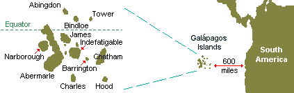
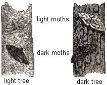

I know, I know, Darwin is a scientific icon and who am I to presume to refute him. Let’s just say that I am a guy with a mind and mouth of my own who likes to shoot both off somewhat more than occasionally. And…and yes, I see logical real-life huge contradictions in Darwinism, contradictions which deserve to be refuted as intelligently as possible. So much for apologetics.
First of all, I do not wish to refute Darwin’s theory completely. I admit, even agree that there is such as thing as the evolution of species and I admire Darwin’s great achievement of observation and literate description of the evolutionary process. Where I stumble over a nasty stone in the path is his conclusion that the modifications which occur are random, or accidental. Let’s take a couple of the most famous examples:

During Darwin’s trip to South America aboard The Beagle, he spent two weeks in the Galápagos Islands where he observed the finches that lived on the various islands. The ones with beaks better suited for eating cactus got more food and thus survived in arid environments, whereas those with beaks better suited for extracting nectar from flowers or eating seeds in other environments were the survivors because of those obvious advantages. He first called this process “natural selection”, but later, following Thomas Malthus, also called it “survival of the fittest”. Now the question is whether the variations in the finch population was caused by the environment or the variations occurred first and the affected birds found themselves already adapted to their new environment – “new” because it is assumed that they had originally emigrated from the mainland where the observed finches had none of the Galápagos variations.
Darwin decided that the environment was not causing the variations within the finch populations. He thought that the variation already existed and that “nature” selected the most suitable beak shapes for the respective environments and rejected as hopeless the less useful ones. (Lamarck on the other hand thought that the environment altered the shape of individuals and that these acquired changes were then inherited after the fact.) More on this important difference below.
In 1798, Thomas Malthus, an English clergyman and economist, calculated that human populations will double every 25 years unless there isn’t enough food to go around, a rather brutal “natural” form of birth control. When Darwin read Malthus' essay he thought that all plants and animals will potentially increase in population unless they are constantly kept in check by predators, diseases, and limitations in food, water, and other resources that are essential for survival. In other words: survival of the fittest through “natural” selection, according to which those least likely to die off are most likely to pass on their traits to the next generation of birds, mice, moths and men.
An example of evolution resulting from so-called natural selection was discovered among "peppered" moths living near English industrial cities during the 19th century. The moths vary in coloration from light to dark. Soot and smoke from coal burning furnaces killed the lichen on trees and darkened the bark. According to theory, when moths landed on these trees and other blackened surfaces, the dark colored ones were harder to spot by birds who ate them and, subsequently, they more often lived long enough to reproduce. Over generations, the environment continued to favor darker moths. As a result, they progressively became more common. By 1895, 98% of the moths in the vicinity of English cities like Manchester were mostly black. Since the 1950's, air pollution controls have significantly reduced the amount of heavy air pollutants reaching the trees. As a result, lichen has grown back, making trees lighter in color. In addition, once blackened buildings were cleaned making them lighter in color. Now, according to Darwinist theory, natural selection favors lighter moth varieties so they have become the most common. This trend has been well documented by field studies undertaken between 1959 and 1995 by Sir Cyril Clarke from the University of Liverpool. The same pattern of moth wing color evolutionary change in response to increased and later decreased air pollution has been carefully documented by other researchers for the countryside around Detroit, Michigan.

While it is abundantly clear that there has been an evolution in peppered moth coloration due to the advantage of camouflage over the last two centuries, it is important to keep in mind that this story of natural selection in action is incomplete, because there may have been additional factors involved. Furthermore, one may question whether light colored moths even attempted to alight on the lichenless trees or that dark ones were particularly attracted to lighter colored ones. Or that predator birds are really fooled by the color of moths.1
What most bothers me, however, is the assumption that the variations in form or color of the creatures involved occurred before their residence in favorable environments. If that were the case, our mysterious “natural selection” would have had to know beforehand that a select number of the species intended to emigrate to the environments which most suited their variation and granted them the requisite visas of beak form or color. Darwinists must deny this of course – but what other explanation do they have? Oh yes: that there was a previous accidental mutation which just happened to correspond to the future alien homeland. That such a thing may have happened a few times is at least plausible, but that it has happened innumerable times in the evolutionary history of the earth is just as likely as that a monkey typing away at a computer will eventually write the Bible if given enough time. The only real evidence in the two phenomena mentioned is that the beaks of certain Galápagos finches are indeed suited to their environment and that dark moths live on dark tree bark and light moths live on light bark. The Why and the How, however, are pure speculation. Ingenious yes, but unproven. Furthermore, if the variations occurred after the creatures moved to new locations, Darwin's theory collapses like a carelessly constructed castle of cards, because in that case the cause is known and it's not natural selection, but the environment.
Let’s move on now to man, the subject which most interests us, because…well…it’s us! The extant animals that look most like man are the apes. They have two legs and two arms – although the arms also serve as legs -, hands which can grasp objects and groom their peers; they nurture their young. They mostly live in trees. Although they possess a certain limited intelligence, they can not speak, which raises the question about their ability to think or whether their intelligence is equivalent to instinct. The Darwinist theory is that one day one of them, due to an accidental variation (in the brain?) decided to descend to earth and stay there – although it’s hard to see the practical advantage to this. Then another mutation transformed grunts into words and upright carriage. Until finally, voilá! A real guy or doll. (Sorry for the irony, but the whole thing is so simplistic that I can’t help myself.) A problem I see is: Why don’t apes continue to evolve and become more human? Also: Where is the missing link between them and man? A possible answer to the first question is that evolution is too slow to notice; and to the second that there are bony vestiges of proto-humans, such as, and especially, the Neanderthals. But the Neanderthals lived for thousands of years co-existent with humans. How, then, could one group of partners – or more likely enemies – evolve from the other? Was there inter-species mating? Who knows? But even if there was it’s not evolution, it's procreation. A more modern idea is that those proto-human species were branches that died off without being able to continue their evolution. This sounds eminently reasonable, but is again speculation.
According to Karl Popper, “The mark of a scientific theory is whether it makes predictions that could in principle serve to falsify it.” In other words: Can it be falsified? If we accept this definition, then Darwinism isn’t even a respectable theory because it cannot be falsified. Oh, elements of it can. Spurious bones have been found in order to enhance a scientist’s reputation. But I am not refuting evolution as such, only the philosophical, the speculative, the How and the Why. There is no way to falsify the concept of “natural selection” which in any case is a mere metaphor: how can “selection” occur naturally, i.e., without being consciously selected? (See Don Cruse's articles on this subject in Archives).
I am not offering a competing theory, only attempting to refute Darwin by calling the causal part of his theory speculative and therefore unproven and unscientific. Others have probably done it better, but at the moment Darwinism is king and queen and anyone questioning it is called a creationist or ingenuous. I agree with the philosopher Thomas Kuhn who asserted that "the history of science is punctuated by violent intellectual revolutions that overturn long periods of conservative puzzle-solving...and research which questions the current accepted theories are debunked as wild and useless speculation." So there is no gradual development of scientific thought, but rather sudden jumps of genius which overthrow what was previously considered gospel truth.
I am confident that just as Copernicus dethroned Aristotle and Ptolemy, and Einstein rocked Newton’s universe, someone will come along sooner or later to overthrow Darwinist orthodoxy.